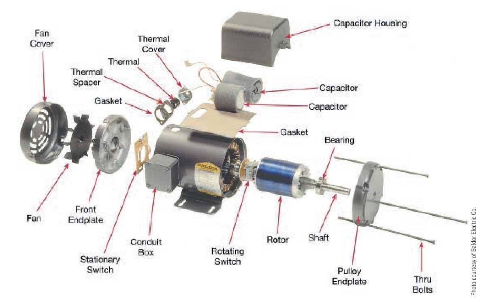
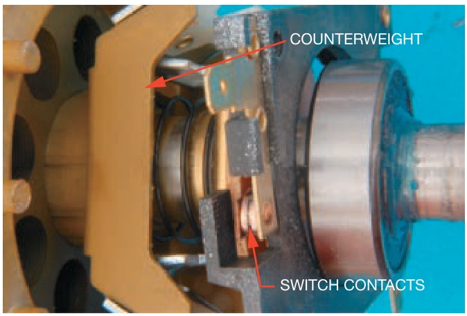
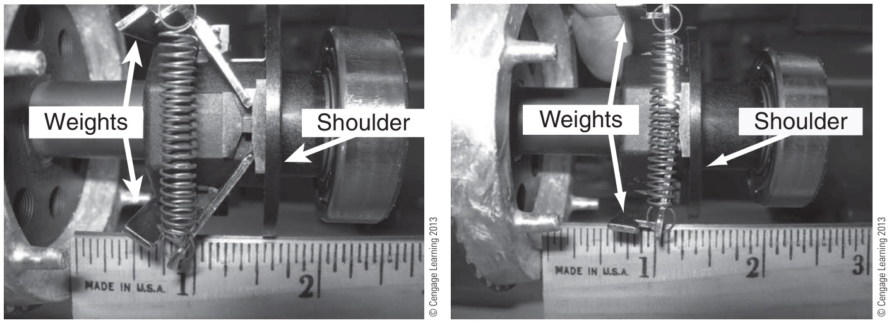

มอเตอร์ 1 เฟส: ขดสตาร์ต ตัวเก็บประจุ และสวิตช์แรงเหวี่ยง Single-phase motors: start winding, capacitor and centrifugal switch
Single-phase motors Start winding, capacitor and centrifugal switch
ปั๊มน้ำ พัดลม และเครื่องอัดลมขนาดเล็กใช้มอเตอร์ 1 เฟสเพราะต่อกับไฟบ้าน 230 V ได้ แต่ขดลวดชุดเดียวที่ป้อนไฟ 1 เฟสสร้างได้แค่สนามที่พองยุบอยู่กับที่ มอเตอร์จึงหมุนเองไม่ได้ ต้องมี ขดสตาร์ต อีกชุดที่วางห่าง 90° และมีกระแสเหลื่อมเฟส เพื่อทำให้สนามหมุน เมื่อมอเตอร์หมุนเร็วพอ สวิตช์แรงเหวี่ยง จะตัดขดสตาร์ตออก ในแบบไฟฟ้า ขั้วของขดรันคือ U1-U2 และขั้วของขดสตาร์ตคือ Z1-Z2 ตาม IEC 60034-8
Small pumps, fans and compressors use single-phase motors because they run from a 230 V household supply. But one winding fed with single-phase current only makes a field that pulses in place, so the motor cannot start by itself. A second, auxiliary (start) winding set 90° away and carrying a current shifted in phase makes the field rotate. Once the motor is fast enough a centrifugal switch cuts the start winding out. In drawings the main winding is U1-U2 and the auxiliary winding Z1-Z2 (IEC 60034-8).
ประเด็นสำคัญของหน้านี้
- ขดลวดชุดเดียว = สนามพองยุบ ซึ่งเท่ากับสนามหมุนสองสนามขนาดครึ่งหนึ่งที่หมุนสวนกัน แรงบิดหักล้างกันตอนหยุดนิ่ง แต่ถ้ามีอะไรผลักให้หมุนก่อน มอเตอร์จะหมุนต่อไปทางนั้นได้
- ขดสตาร์ตวางห่าง 90° และมีกระแสนำหน้ากระแสขดรัน ชนิดแยกเฟส (split-phase) ใช้ขดสตาร์ตที่ความต้านทานสูง กระแสเหลื่อมกันราว 30° แรงบิดเริ่มเดินพอใช้ ชนิดตัวเก็บประจุเริ่มเดิน (capacitor-start) ต่อตัวเก็บประจุอนุกรม กระแสเหลื่อมเกือบ 90° แรงบิดเริ่มเดินสูง
- สวิตช์แรงเหวี่ยง ปิดอยู่ขณะหยุดนิ่ง และตัดขดสตาร์ตออกที่ราว 75 % ของความเร็ว ส่วนมอเตอร์ตัวเก็บประจุถาวร (permanent-split capacitor, PSC) ไม่มีสวิตช์ ขดสตาร์ตต่ออยู่ตลอดผ่านตัวเก็บประจุรัน
- กลับทางหมุน โดยสลับขั้ว Z1 กับ Z2 ของขดสตาร์ต (หรือสลับ U1 กับ U2 อย่างใดอย่างหนึ่ง) การสลับสาย L กับ N ที่ปลั๊กไม่ทำให้กลับทาง เพราะกระแสในขดลวดทั้งสองกลับพร้อมกัน
Key points of this page
- One winding = a pulsating field, which equals two half-size fields turning opposite ways. Their torques cancel at standstill, but once something pushes the rotor round it keeps turning that way.
- The start winding sits 90° away and its current leads the main current. A split-phase motor uses a high-resistance start winding (about 30° shift, fair starting torque); a capacitor-start motor adds a series capacitor (almost 90°, high starting torque).
- The centrifugal switch is closed at standstill and cuts the start winding out at about 75 % of speed. A permanent-split capacitor (PSC) motor has no switch: its auxiliary winding stays in through the run capacitor.
- To reverse, swap Z1 and Z2 of the start winding (or swap U1 and U2, not both). Swapping L and N at the plug does not reverse it, because the currents in both windings reverse together.
แบบการต่อมอเตอร์ 1 เฟสในตำรา
The single-phase motor connection in the textbook
รูป 5.1 ในตำราวาดขดรัน (RW, running winding) ระหว่าง U1-U2 และขดสตาร์ต (SW, starting winding) ระหว่าง Z1-Z2 ต่อขนานกันคร่อม L1 กับ N โดยมีสวิตช์แรงเหวี่ยง (CS, centrifugal switch) อนุกรมกับขดสตาร์ต ด้านขวาคือแผงขั้วในมอเตอร์: สะพาน U1–Z1 และ U2–Z2 แล้วต่อสาย L1 และ N เข้า
เมื่อนำไปเขียนแบบ: มอเตอร์แบบตัวเก็บประจุต้องวาดตัวเก็บประจุอนุกรมกับขดสตาร์ตด้วย และสวิตช์แรงเหวี่ยงปิดอยู่ขณะหยุดนิ่ง จึงวาดเป็นหน้าสัมผัสปกติปิด ภาพจำลองในส่วน B ด้านล่างวาดครบทั้งสองอย่าง
Fig. 5.1 of the textbook draws the main winding (RW, running winding) between U1-U2 and the start winding (SW, starting winding) between Z1-Z2, in parallel across L1 and N, with the centrifugal switch (CS) in series with the start winding. On the right is the terminal board inside the motor: links U1–Z1 and U2–Z2, then the L1 and N leads.
When drawing it: a capacitor motor also needs its capacitor drawn in series with the start winding, and the centrifugal switch is closed at standstill, so it is drawn normally closed. The simulation in section B below draws both.

สวิตช์แรงเหวี่ยงอยู่ตรงไหน และทำงานอย่างไร
Where the centrifugal switch is, and how it works
ภาพแยกชิ้น (รูป 29.6) ของมอเตอร์ตัวเก็บประจุเริ่มเดินและรัน แสดงว่าตัวเก็บประจุติดอยู่ในกล่องบนตัวมอเตอร์ (capacitor housing) ส่วนสวิตช์แรงเหวี่ยงมีสองส่วน: ส่วนที่หมุน (rotating switch) ติดบนเพลาโรเตอร์ และ ส่วนที่อยู่กับที่ (stationary switch) ซึ่งมีหน้าสัมผัส ติดที่ฝาครอบด้านหน้า
รูป 29.4 และรูป 4-4/4-5 แสดงหลักการ: ขณะหยุดนิ่ง สปริงดึงตุ้มน้ำหนักเข้า บ่า (shoulder) ถูกดันออกไปกดหน้าสัมผัสให้ ต่อ ขดสตาร์ตจึงได้รับไฟ เมื่อมอเตอร์หมุนเร็วขึ้น แรงเหวี่ยงเหวี่ยงตุ้มออก บ่าจึงหดกลับ หน้าสัมผัสจึง ตัด ขดสตาร์ตออก ในแบบไฟฟ้าจึงต้องวาดสวิตช์นี้เป็นหน้าสัมผัสปกติปิด วิดีโอท้ายภาพแสดงกลไกนี้ขณะมอเตอร์ทำงานจริง
The exploded view (Fig. 29.6) of a capacitor-start capacitor-run motor shows the capacitors in a housing on top of the frame, and the centrifugal switch in two parts: the rotating switch on the rotor shaft and the stationary switch, with the contacts, on the front end plate.
Figs. 29.4 and 4-4/4-5 show how it works. At standstill a spring pulls the weights in, the shoulder is pushed out against the contacts and holds them closed, so the start winding is energised. As the motor speeds up, the weights fly out, the shoulder pulls back and the contacts open, cutting the start winding out. That is why the switch is drawn as a normally closed contact. The video after the pictures shows the mechanism on a running motor.



สนามพองยุบ สนามวงรี และสนามหมุน
Pulsating, elliptical and rotating fields
ลูกศรสีแดงคือสนามของขดรัน (แกนแนวตั้ง) ลูกศรสีฟ้าคือสนามของขดสตาร์ต (แกนแนวนอน) ลูกศรสีขาวคือผลรวม และเส้นจาง ๆ คือรอยที่ปลายลูกศรสีขาววาดไว้ในหนึ่งคาบ เริ่มจาก "ไม่มีขดสตาร์ต": ลูกศรสีขาวยืดหดอยู่บนเส้นตรง ไม่หมุน กด "แยกเป็นสองสนาม" เพื่อดูสนามสองสนามที่หมุนสวนกัน แล้วเลือกชนิดแยกเฟสและชนิดตัวเก็บประจุ ดูรอยเปลี่ยนจากเส้นตรงเป็นวงรีและเกือบเป็นวงกลม
The red arrow is the main winding's field (vertical axis), the blue one the start winding's (horizontal axis), the white one their sum, and the faint line the path the white arrow's tip traces over one cycle. Start with "No start winding": the white arrow grows and shrinks along a straight line and does not turn. Press "Split into two fields" to see two fields turning opposite ways. Then choose split-phase and capacitor-start and watch the path change from a line to an ellipse to almost a circle.
เริ่มเดินมอเตอร์ 1 เฟส: สวิตช์แรงเหวี่ยงตัดเมื่อไร
Starting a single-phase motor: when does the centrifugal switch open?
กด จ่ายไฟ แล้วดูความเร็วและกระแส: เมื่อความเร็วถึง 75 % สวิตช์แรงเหวี่ยงตัด ขดสตาร์ตหยุดมีกระแส จากนั้นลอง สลับ Z1–Z2 ก่อนจ่ายไฟ (มอเตอร์หมุนกลับทาง) และลองสลับขณะมอเตอร์หมุนอยู่ (ไม่มีผล เพราะขดสตาร์ตถูกตัดไปแล้ว) สุดท้ายลองความเสียหายสองแบบ: สวิตช์ค้างเปิด และสวิตช์ค้างปิด
Press Switch on and watch speed and current: at 75 % speed the centrifugal switch opens and the start winding stops carrying current. Then swap Z1–Z2 before switching on (the motor reverses), and try swapping while it runs (no effect, because the start winding is already out). Finally try the two faults: the switch stuck open, and stuck closed.
กลับทางหมุนมอเตอร์ตัวเก็บประจุเริ่มเดิน
Reversing a capacitor-start motor
มอเตอร์ตัวเก็บประจุเริ่มเดินต่อ U1 กับ Z1 เข้าสาย L และต่อ U2 กับ Z2 เข้าสาย N หมุนตามเข็มนาฬิกา ต้องการให้หมุนทวนเข็มนาฬิกา ควรเปลี่ยนการต่ออย่างไร และถ้าสลับสาย L กับ N ที่ต้นทางแทนจะได้ผลหรือไม่
A capacitor-start motor has U1 and Z1 on L and U2 and Z2 on N, and turns clockwise. It must turn anticlockwise. How should the connection change, and would swapping L and N at the supply work instead?
ความเร็วที่สวิตช์แรงเหวี่ยงตัด
The speed at which the centrifugal switch opens
มอเตอร์ 1 เฟส 4 ขั้ว 50 Hz ความเร็วพิกัด 1420 rpm สวิตช์แรงเหวี่ยงตัดที่ 75 % ของความเร็วซิงโครนัส จงหา (ก) ความเร็วที่สวิตช์ตัด (ข) สลิปที่พิกัด
A 4-pole, 50 Hz single-phase motor has a rated speed of 1420 rpm, and its centrifugal switch opens at 75 % of synchronous speed. Find (a) the switch-out speed, (b) the rated slip.
ฝึกเพิ่ม
More practice
ลองทำดู 1 — สนาม
- ส่วน A เลือก "ไม่มีขดสตาร์ต" แล้วกด "แยกเป็นสองสนาม": ลูกศรสีชมพูและสีเขียวยาวเท่ากันและหมุนสวนกัน ผลรวมจึงอยู่บนเส้นตรงเสมอ
- เลือกชนิดตัวเก็บประจุ แล้วกด "สลับ Z1–Z2": รอยยังเป็นวงกลม แต่ลูกศรสีขาวหมุนกลับทาง
ลองทำดู 2 — ความเสียหาย
- ส่วน B เลือก "สวิตช์ค้างเปิด" แล้วจ่ายไฟ: มอเตอร์ไม่หมุน กระแสค้างราว 5 เท่า อาการจริงคือเสียงหึ่ง ถ้าเอามือหมุนเพลาช่วย มอเตอร์จะหมุนต่อไปทางนั้น
- เลือก "สวิตช์ค้างปิด": มอเตอร์หมุนได้ แต่ขดสตาร์ตและตัวเก็บประจุสตาร์ตยังมีกระแส ซึ่งออกแบบให้ใช้ไม่กี่วินาที จึงร้อนจนเสียหาย
Try this 1 — the field
- In section A choose "No start winding" and press "Split into two fields": the pink and green arrows are equal and turn opposite ways, so their sum always stays on one line.
- Choose capacitor-start and press "Swap Z1–Z2": the path is still a circle but the white arrow turns the other way.
Try this 2 — faults
- In section B choose "switch stuck open" and switch on: the motor does not turn and draws about 5 times rated current. In real life it hums; spin the shaft by hand and it runs on in that direction.
- Choose "switch stuck closed": the motor runs, but the start winding and start capacitor keep carrying current. They are made for a few seconds only, so they overheat and fail.